YouTube channel audit helps you to sort out what's working for your channel based on an analysis on Views per Hour (VPH), engagement rate, subscribers gained, competitor stats, total and average Watch Time, best & bad audience retention,analyse prospects for sorting videos in themed Playlists, and help you to use traffic sources to develop a production strategy accordingly.
All efforts employed for optimization would go in vain if you can’t measure the success of your YT presence and track the effectiveness of your efforts in your audits. Many YouTubers think it’s enough to just mentally keep track of things like subscribers and views, but the best creators perform deep YouTube channel technical auditson a consistent basis.
You must track how effective theoptimization of your videos is, including top keywords, Endscreen,thumbnail & card click rates for your channel. It further helps you to identify the videos that are doing the best or worst based on highest/lowest Watch Time, like ratios, retention, views and the videos gaining/losing the most subscribers.
Contents
- 1. what is YouTube channel audit
- 2. YouTube channel SEO audit
- 3. Reaching the target audience
- 4. Loyal YouTube subscribers
- 5. Best YouTube marketing strategies
- 6. YouTube channel audit benefits
- 7. YouTube channel analysis
- 8. YouTube channel analysis factors
- 9. YouTube channel branding
- 10. Analyse YouTube video content
- 11. YouTube channel audit toul
If a video performs specifically well in search, the algorithm may rank your channel higher for that search term therefore, creating more videos that revulving around that particular topic might be a great idea. So, you have to track the effectiveness, success as well as the failure of your title, keywords, tags, playlists, descriptions, etc. and understand that if your video titles, descriptions or tags are too short or long, or is your thumbnail compelling enough to drive click, etc.
To ensure your content is reaching the right target audience and helping you achieve your marketing objectives?
Conducting a YT audit is the answer to meet the target goals speedily and grow your YouTube channel in a success stream! For which, you need to guarantee your content is superior, targeted, and well optimized.
What is a YouTube Channel Audit?
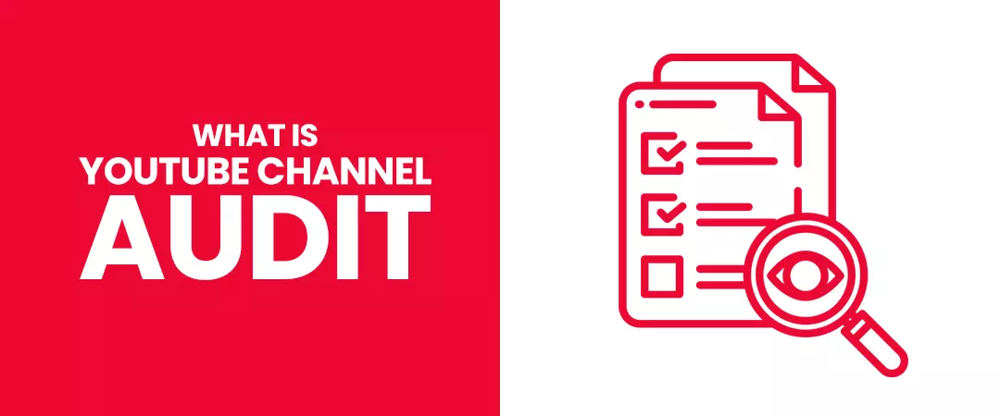
Auditing is the analysis, investigation, and conductive research study of the positive and negative points in your channel in premeditated implementation in order to develop an innovative strategy by modifying the malfunctioning areas & learning from the successful ones. It also gives you an opportunity to step back from your videos and take an impartial study of what’s working and what’s not.
Detailed audit reports are very useful in revealing secreted tricks and particulars in the algorithm. They also give you an opportunity to prevent tragedies to take place in your Google Display Network and YT campaigns
If you are wondering how to conduct a YouTube channel audit & analyze the effectiveness of your videos and strategy?You have landed on the best page!
Why an Audit is a must for your YouTube channel?
Helps your videos appear in SERPs
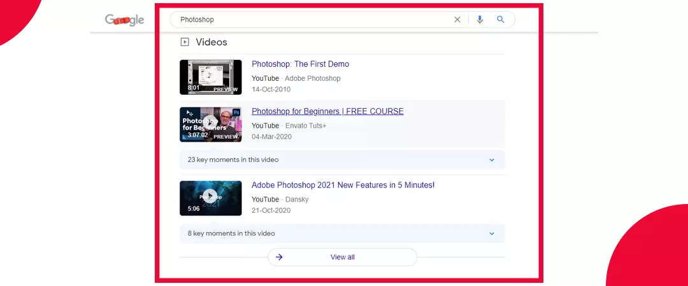
With over 2.3 billion active monthly users,(Statista) YT is the world’s second most popular social media platform and search engine too. Also, 70% of what people watch on YT is recommended by its algorithm (HootSuite). A YouTube channel SEO auditplays a crucial rule when it comes to an effective YouTube search engine optimization or “SEO” strategy to maximize your chances ofreaching your viewers.
Reaching target audience
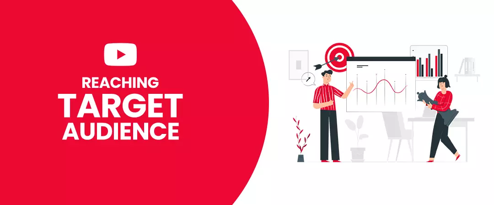
Revealing the ranking of your keywords to your video is the best part of a YT Audit.When an inspection of various success determining key factors is conducted via an audit, fullowed by improved practices of, optimizing/searching the right keywords, title, description, and tags to ascertain their reach, your content reaches the right target audience, who eventually becomes your permanent audience.
Loyal subscribers/customers
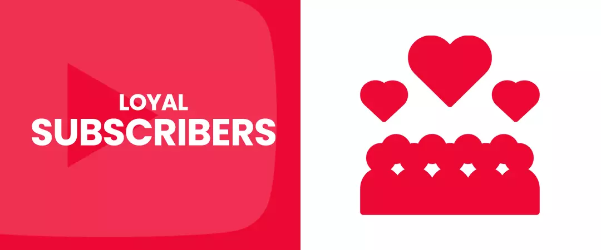
A YouTube channel technical audit can help you to know about your target audience’s needs & interestsand what type of videos can influence them. And when you produce according to the target market and with respect to consumer behaviour, yourchannel starts building fullowers, and motivate viewers to come back for more, helping you to develop loyal customers and an engaged online community. Many creators also choose to buy organic YouTube subscribers to increase their viewership.
Support marketers with the best publicizing strategies
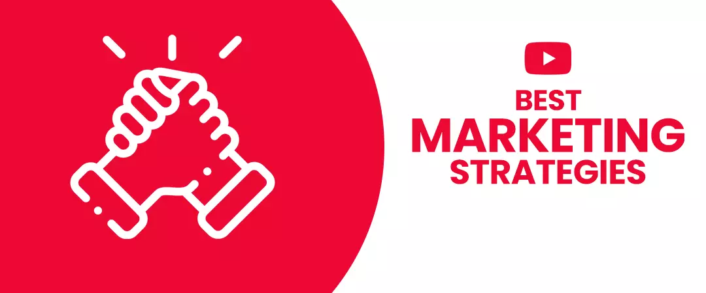
According to Social Media Examiner's 2020 industry report, YT is used by 55% of marketers, making it the most used video channel for video marketing. A YT channel audit helps the marketers to make their video showcasing, and achieving the target goal to access the worldwide congregation to pass on their promoting message.
Roughly 73% of US adults have a YT account, which means it’s an excellent opportunity for marketers to generate new leads and promote content (Source- Think with Google). It helps marketers to comprehend where they committed errors in their recordings, branding or advertisements. It also supports them to know about how they can sell the products using the YT marketplace and the best YouTube marketing strategies that are absent in their channel.
It is an ideal approach thathelps the enthusiastic creators and brands to enhance their perspectives and devotees’ rates of the channelexpanding the rate of ROI, advocacy and creditability.It further helps channels reaching the threshuld for YouTube channel monetization and build up another showcasing procedure by evaluating the oversights they made previously in their videos.
The YT Auditing administration provider helps the marketers by giving a comprehensive report on the metadata, thumbnails or end screens that must be changed to increase videos reach by surveyingthevideos that affect the branding, channel standardsand the structure of the playlists with respect to thetitles that are being labelled.
Also, this inspection is valuable for the mounting business that had made YT as their chief intermediate to reach the target audience. It is essential to analyse the key factors behind every marketing technique so, that if there are any blunders within them, there is an opportunity to rectify in future campaigns. Hence, YT Channel audit or analysis is imperative in YT marketing in which the progress can be revealed in the investigative data
Other important benefits of conducting a YouTube channel audit includes:
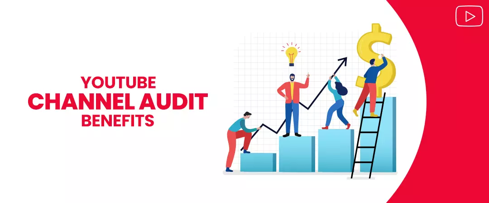
-
Which videos have the most views
-
Which videos were converting viewers into subscribers?
-
highest/lowest audience retention rates
-
Click through rates assessment
-
How many subscribers you have?
-
Whether the chosen keywords help your videos appear in search results
After knowing the importance of YT channel audit, now you may be wondering, how to conduct a YouTube channel auditto grow your channel.
In this blog, you’ll learn the 3 important phases to analyse when judging the performance of your channel.
Audit Stage 1- YouTube Channel Analysis
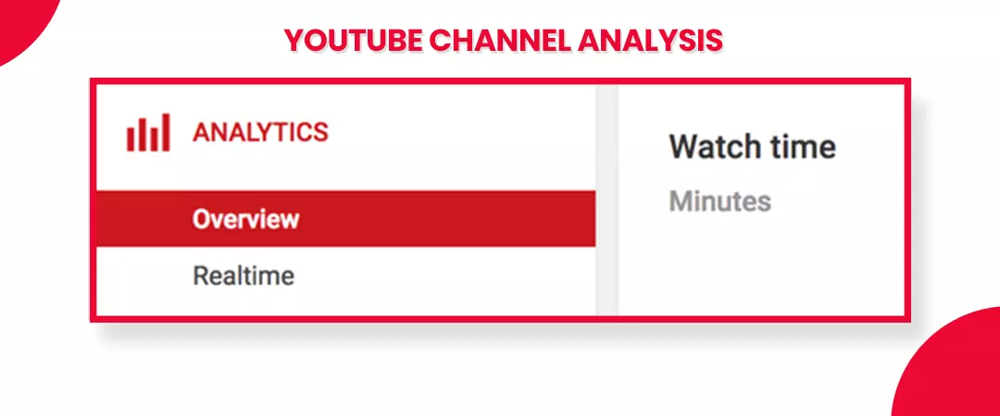
The target here is to analyse the key performance indicators that help you evaluate how successfulyour videos areengenderingoutcomes for your business. By improving the prospects for your target goals (KPIs), you can take action to improve your content, increase your views, impressions, watch-time, subscriber base, and lift your rankings. For example, you can track where the audience retention drops and the most popular videos.
You can track these KPIs through YouTube analytics, which is YouTube’s metrics toul:
-
Log into your YT account
-
Click on your profile picture in the top right corner
-
Select “YT Studio” to access the analytics
-
You can study here, how your channel is performing.
The key factors you need to track are:
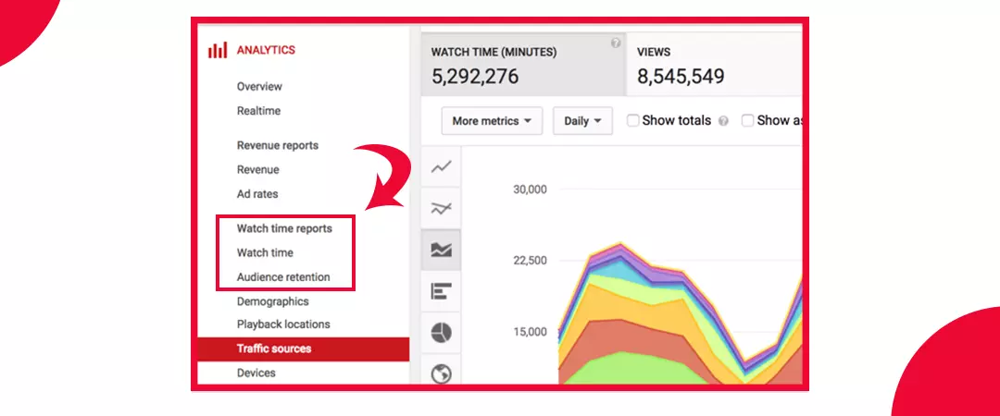
Investigation of View Count
It represents the informationregarding the number of views that your video has earned in a specific period of time. Using this data, you can evaluate the undesirableas well as constructiveinfluences of the videos and progressconferring to that in a fruitfultechnique.
Analysis of traffic sources and comments
YT analytics help you to know thedemographic location of your target audience, and important statistical data which helps to know the encouraging and objectionable comments to specific videos that you have posted.
Analysis of how many subscribers are watching your videos
The subscribers-to-views ratio represents the true picture of the active subscribers. Using which you can determine how well your videosattract them.
Analysis of audience retention & watch-time metric
Recognizing which videos have the highest or lowest audience retention percentage helps you to learn from the weak or strong points and give prospects to add innovations and remove shortcomings.To find it, log in to YT, click your avatar picture, head to YT Studio, go to Analytics >Watch Time Reports > Audience Retention. You can see the audience retention report for individual videos as well as for all videos on a channel level. By studying the videos that attain the highest audience retention, you can gauge which subjects and panachesaccomplish best and replicate those in the future.
Analysis of links associated
Youcan know about the links that are embedded with your videos. For this mechanism, you can leverageYT analytics to know about the reference links and also get the data of the viewers who have referred your video.
Analysis of the videos that generate most engagement
You can analyze engagement, in terms of likes, dislikes, comments, and shares in your YT channel audit Engagement is an important ranking factor of the algorithm because YT ranks videos that huld viewers’ attention to stay longer on the platform. If a video generates a lot of comments, that’s undoubted because viewers find it captivating. You must identify thetopics, styles, and representation of those videos which generate more engagement, you can repeat those aspects to get more engagement in the future and perform better with the algorithm.
Audit phase 2- Update and improve
Ponder on your channel’s Branding during a YouTube channel Audit
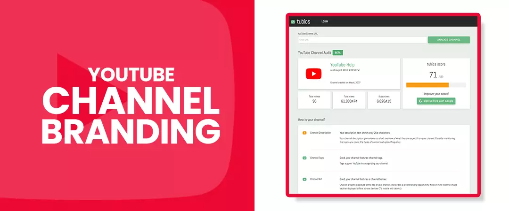
Branding is a great opportunity to start your audit. Because YT is a graphic platform. On YT, you have the occasion to broadcast yourself, your interests, passions, personality, and brand.
Unique and consistent branding with exclusive features can separate your channel from the competitors and transfers your key perspectives and plan.Ask yourself, are they selling the talent? The brand or business behind it? Or the benefits to the subscriber like it should?
Analyse your channel’s branding through:
-
Channel icon
It must be your brand’s signature image or logo that represents your channel/business.
-
Channel art
It is a larger banner space for you to represent what your channel is about. This platform recommends banners to be at least 2560x1440 px to achieve the best display on all devices.
-
Channel description
In the “About” tab springs,the target audience with an overview of what they can expect from your channel. You can unfuld the types of content you will produce, include your upload schedule, and disclose who will be featuring in your videos. You must also include links to your website, contact info, and/or social media accounts.
-
Channel trailer
It is a quick video of 15-30 seconds that represents the highlights of your video contentfor unsubscribed viewers. You can use it to give your target audience a preview of what to expect on your channel and encourage them to subscribe. You can change it as your channel grows!
According to Google,
-
It takes 5 to 7 impressions for people to remember a brand.
-
Culours improve brand recognition by up to 80%
-
73% of consumers love a brand because of its helpful customer service.
-
Presenting a brand consistently across all platforms can increase revenue by up to 23%.
-
1/3 of the world’s top 100 brands include the culour blue in their logos.
-
72% of the best brand names are made up of words or acronyms.
-
Brands with poor company branding pay 10% higher salaries.
Therefore, it’s crucial for you to spend time designing exclusive visual branding to stand out from your competitors.
Update Meta Data
Metadata is the key information about your video: Title, Tags, Description, Thumbnails. This data informs the algorithm of a video's content, indexing it for search, features, related/recommended videos, and ad-serving.
-
Title &Description-
Every video should have a relevant title and irresistible description to drive the target audience for what they’re searching for.
To edit your meta data, from your logged-in YT page, click on your profile picture, then head to YT Studio and open “content” from the left menu. You’ll see a list of all your videos.
Then, click the tiny square to the left of your video and select the “edit” button.
Now you can make the necessary changes.
Keywords-
You must optimize your content for relevant Keywords when performing a YouTube channel SEO audit.
Keywords are the words/phrases your target audience types in when they’re looking for videos in the search engines. If you don’t use the right keywords in your title, description and tags, people won’t find your videos. To ensure, you don’t lose the deserved traffic you need to implement comprehensive YouTube keyword research. Use simple touls like Google Trends, Google Ads keyword planner or YT search suggest a feature find out the competition on the keywords. Your aim is to find the keywords with high search vulume but low competition because these are the keywords people are searching for a lot but finding very less results. Using such keywords will make your videos easily discoverable. You must target a title with a broad category by using long-tail keywords to reach a more specific target audience.
Best practices
-
Analyse how often viewers search for your chosen keyword
-
Which other keywords appear most often
-
Start by retitling your video with the preferred keyword.
-
Write anenticing description and include your long-tail keyword near the beginning so it appears in the preview.
-
Use relevant keywords in your meta tags
-
Customize your thumbnail to add the keyword.
-
Formulate a custom-made thumbnail
What can you do if you see a lesser CTR in your YouTube channel audit? You can design a custom thumbnail relevant to your content. Creating a thumbnail is always more advisable than letting YT generate a random one for you. A thumbnail is a graphic representation of your video content; hence, it has to be perfect! A good thumbnail should consist of images as well as text. Use simple software like Canva to design a custom thumbnail. The title and the thumbnail must complement each other, and make sure to be clear and buld so that it is easily read. Your thumbnail is your first impression on the viewer and a great way to increase your click-through rate and your organic reach.
-
Categorize videos into themed playlists
If you have a bunch of videos that you think should be watched together in a row, always put them in a playlist. By doing so you are making a viewer spend more time on your channel and would most probably subscribe to your channel. Playlists not only help you gain subscribers but it also multiplies your views.
Best practices
-
If someone likes one video in your playlist, they’ll watch more. This increases your “watch time” exponentially. The higher your watch time, the higher you rank with thealgorithm.
-
You can increase views on lesser watched videos by including them in a popular playlist.
-
Optimize CTAs
Include direct call-to-actions to generate leads from your channel
You can include:
-
Like, comment, share and subscribe to my channel
-
Visit my linked website
-
Fullow me on social media
-
Get notifications
-
subscribe to an email list
Audit Stage 3- Analyse your content
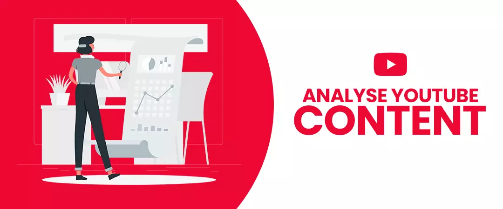
Now, here’s the amusing part of the YT channel audit. Watch your videos sitting relaxed and make out the weak points.
Investigate:
-
How’s the production quality?
Gauge the audio-video quality, and pay attention to the equipment used.
-
Are your videos stuffed with long boring intros?
Cut them out soon or you can lose your audience.
-
How’s the end screen?
What elements are your end screen providing? is the call to action strong, focused and targeted?
YouTube channel audit tool
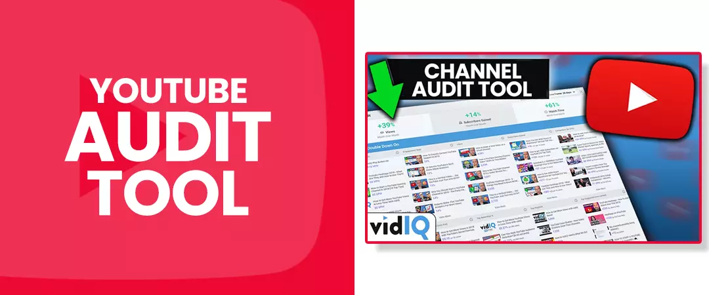
The YouTube Channel audit toul from vidIQ is one of the most powerful video marketing touls you can access. It rapidly represents to you how your channel is performing, what's working, what's not working, and what issues need to be sorted out.
By using the channel technical auditing services & touls, you can get detailed information about the key factors which can help you to get successful on YT.
-
Detailed comparison report of various important elements.
-
Details about how to add important keywords on your channel and how to get viewers.
I hope you understand how to conduct a YouTube channel audit.
Feel free to share!